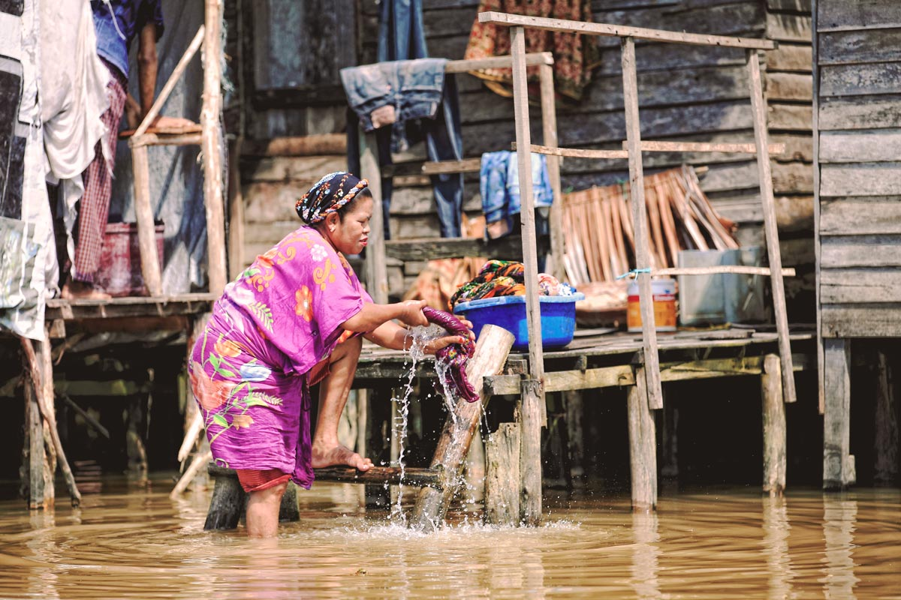

Banjarmasin City Vision Profile
Banjarmasin, South Kalimantan, Indonesia

Kota Kita created a City Vision Profile for three mid-size Indonesian cities—Banjarmasin, Pekalongan, and Solo—that are widely recognized as having good governance, and inclusive and dynamic policies that target the poor. The City Vision Profile is a comprehensive summary of the city’s development vision and serves as an advocacy tool in local government efforts to promote medium-term investment priorities. The City Vision Profile — part of the City Development Strategy: “Making Urban Investment Planning Work” program, an initiative supported by the Cities Alliance, and implemented by UN HABITAT Indonesia and an office of the Indonesian Ministry of Public Works — uses a succinct and easy-to-read format that employs maps, diagrams and photos in order to make the city vision accessible to broad audiences and non-technical readers. It can be a one-stop reference for feasibility assessments and funding negotiations for specific projects, whether already prioritized in the Vision or proposed at a later stage.
The City Development Strategy aims to better link local governments with national government funding resources for the implementation of strategically prioritized projects, primarily for medium-term investments, which are both feasible and impactful. As the subjects of the City Vision Profiles, these three “champion” cities can serve as good examples for Indonesia’s nearly 500 cities, demonstrating how strong leadership and vision are essential to fostering comprehensive, inclusive and credible strategies.
The City Vision Profile is a comprehensive summary of the city’s development vision and serves as an advocacy tool helping the efforts of local governments to promote their investment priorities.
The city of Banjarmasin in Kalimantan, the Indonesian part of Borneo island, is implementing an innovative development vision for the city as a “Gateway to Kalimantan” — a place with strong cultural heritage, self-sufficient local economies, a high-quality public realm enhanced by a clean environment, and robust infrastructure. The city vision and its related strategies and plans for the future, detailed in our City Vision Profile, astutely position Banjarmasin’s assets as drivers for growth. This comes at a critical time, when Banjarmasin's place in Kalimantan and Indonesia is changing, and its economy transitions from reliance on the rubber and timber extraction industries. Banjarmasin’s city development strategy focuses on three components: becoming a regional economic hub and gateway city, a traditional river city and a livable city.
In our City Vision Profile, we give a timeline of achieved and in-the-pipeline projects for each of the three components. We also summarize the problems facing each component, along with the actions taken and their outcomes, as well provide snapshots of projects accompanied by completion dates, budgets and implementing agency.
Economic Gateway to Kalimantan
Banjarmasin’s economy was previously based on the extraction of raw materials, but is now transitioning to become a city of services and trade. Market renovations and improved port facilities (like the expansion of the Basirih harbor) are intended to strengthen Banjarmasin’s role as a regional trading center, serving towns and cities in the hinterland and offering improved economic opportunities for the city’s residents.
Traditional River City
Banjarmasin's rivers connect it to the rest of the Kalimantan region and are central to the identity of the city. In order to fully realize the potential of water assets through a comprehensive approach to support cultural activities, tourism, economic activity and public health, the city is reorienting itself toward its rivers. By integrating the rivers into development plans, the city government aims to create a new public realm, improve water quality and develop tourism infrastructure, through such programs as reviving the floating market and linking the river to other cultural assets.
Liveable City
Under the program ‘BUNGAS’ (Bersih: clean, Unggul: superior, Nyaman: comfortable, Gagah: resilient, Aman: safe, Serasi: harmonious), the city plans to improve basic services, such as the provision of clean water through the installation of new filtration systems, to increase mobility through ring roads, bridge retrofitting, and a new bus terminal, and to improve the quality of life for the urban poor. The regional water utility has successfully implemented a program to provide clean water to the entire city, which now reaches 98 percent of the registered population. This is the highest coverage in Indonesia and represents a significant achievement.



In addition to these three components, poverty reduction is an overarching component of the City Vision. Firstly, the city’s strategic focus to position itself as the economic gateway to Kalimantan is aimed at creating local employment and attracting businesses, which would benefit the poor and create employment opportunities. Policies that specifically target the poor include upgrading slum areas and relocation of select families to public housing, improving infrastructure in poor areas and providing credit to small businesses. These initiatives are closely coordinated with the goals of the other City Vision components.